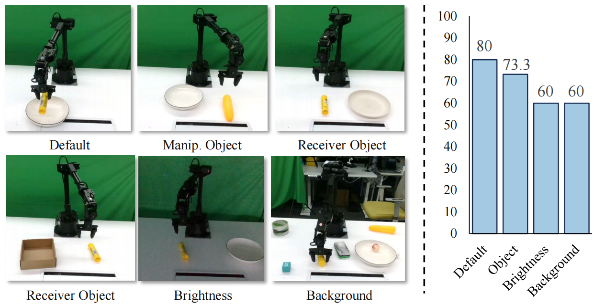
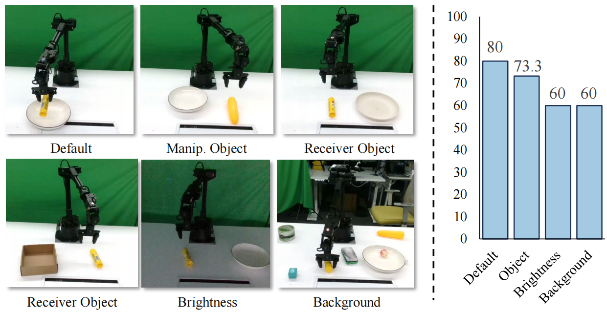

Robotic manipulation requires precise spatial understanding to interact with objects in the real world. Point-based methods suffer from sparse sampling, leading to the loss of finegrained semantics. Image-based methods typically feed RGB and depth into 2D backbones pre-trained on 3D auxiliary tasks, but their entangled semantics and geometry are sensitive to inherent depth noise in real-world that disrupts semantic understanding. Moreover, these methods focus on high level geometry while overlooking low-level spatial cues essential for precise interaction.
We propose SpatialActor, a disentangled framework for robust robotic manipulation that explicitly decouples semantics and geometry. The Semantic-guided Geometric Module adaptively fuses two complementary geometry from noisy depth and semantic-guided expert priors. Also, a Spatial Transformer leverages low-level spatial cues for accurate 2D-3D mapping and enables interaction among spatial features.
We evaluate SpatialActor on multiple simulation and real-world scenarios across 50+ tasks. It achieves state-of-the-art performance with 87.4% on RLBench and improves by 13.9% to 19.4% under varying noisy conditions, showing strong robustness. Moreover, it significantly enhances few-shot generalization to new tasks and maintains robustness under various spatial perturbations.
TBD
 
